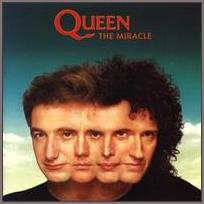
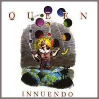
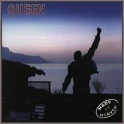

Three latest studio album:
1. The Miracle

1980
2. Innuendo

1991
3. Made In Heaven

1995
Tracking list:
- It's A Beautiful Day (23 — Queen)
- Made In Heaven (40 — Mercury)
- Let Me Live (42 — Queen)
- Mother Love (38 — May / Mercury)
- My Life Has Been Saved (17 — Queen)
- I Was Born To Love You (44 — Mercury)
- Heaven For Everyone (38 — Taylor)
- Too Much Love Will Kill You (26 — Lamers / May / Musker)
- You Don't Fool Me (18 — Queen)
- A Winter's Tale (37 — Queen)
- It's A Beautiful Day (Reprise) (* — Queen)